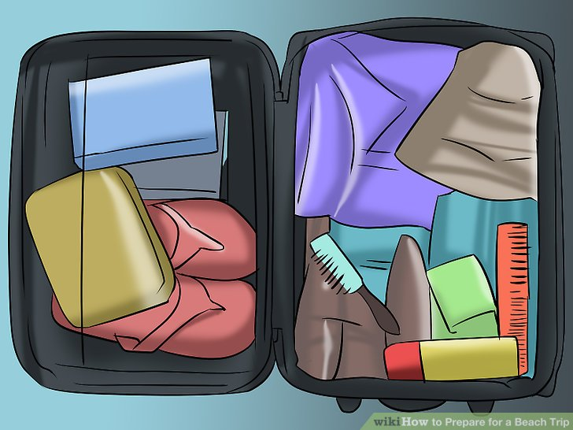
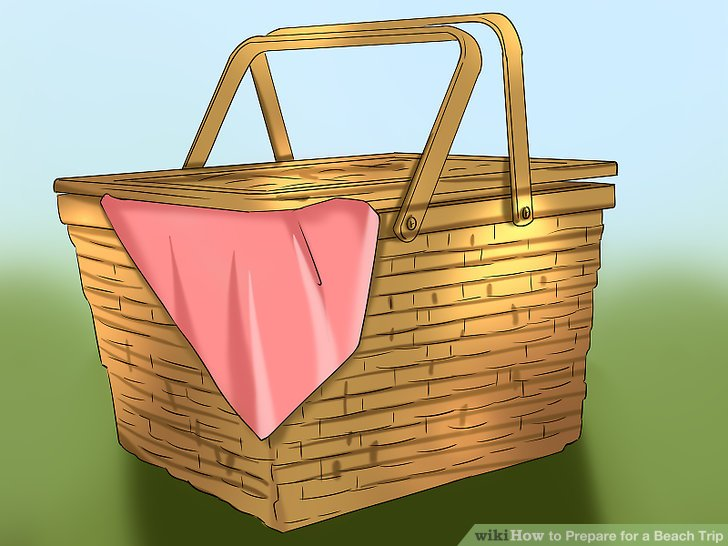

my trip to mountain was charming
prblished on

trip planing
A beach trip can be a ton of fun and very relaxing. A poorly planned trip, though, can turn into a pain—literally, if you forget to pack sunscreen. As fun as going to the beach can be, it does take some planning ahead in order to have the best trip possible, so take a few days to plan for your next beach trip.
Another trick to protect your valuables is to clean out an old sunscreen bottle. Use it to hide valuables you don't want anyone to steal, and as a bonus, it keeps them dry. You can also stash electronics in zip-top bags for protection.[6] For beach toys, find a net bag so sand can be left on the beach. Pack all the food in a cooler with ice.
Packing for the Trip
Pack the right clothes. Pack the swimsuit you've picked out and an extra change of clothes. The extra change of clothes is for the ride home, so you won't be all wet and sandy.[1] Also, make sure you're comfortable enough to spend all day in the clothes you wear down. Having a changes of clothes means you can head somewhere else after the beach. Don't forget to include good footwear. Take sandals for the beach and water shoes for the ocean so you're ready for anything.
Take protection from the sun. You don't want to ruin your beach trip with a bad sunburn. Plus, protecting yourself from the sun will keep your skin looking younger as you age and guard against skin cancer. Start with a sunscreen of at least 15 SPF. Check to make sure it protects against both UVA and UVB rays. Don't forget to add a lip balm with sunscreen to protect your lips. Make sure to reapply it frequently, especially after sweating or jumping in the water. Use clothing for protection. Hats and sunglasses offer much needed protection for your face and eyes, but wearing a coverup with long sleeves can also offer protection. If coverups aren't your thing, take a beach umbrella or tent/gazebo instead.
Take some solo activities.
Take some solo activities. You'll enjoy just lounging for a bit, but you might also want something to enjoy all on your own. For instance, take a light book you've been meaning to dive into. The beach is the perfect time to do it.[10] If you take an e-reader, make sure it's okay in the glare of the sun, and that you have a portable charger for it if you need it. You may also want a portable charger for your phone. Slip the e-reader into a zip-top bag to protect it. You could also take activity books such as crossword puzzles and Sudoku books.
ome good snacks to take include fruit, granola bars, vegetable sticks, and bottles of water. Skip the sodas as those don't hydrate as well. In fact, if you're planning on staying all day, consider just packing lunch. Though you can take a cooler for drinks, you might want to pick something that won't spoil easily, such as a peanut butter and jelly. Bring a small bag for any trash you may accumulate. It may be difficult to find a trashcan at the beach. Bring moist towelettes with your food. You can use them to clean up hands before and after your eat.